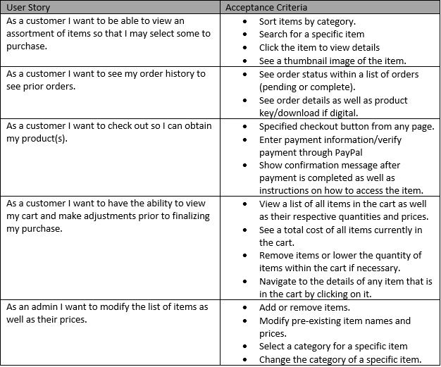

Full Stack Ecommerce Website: Specifications

I have detailed the features and supplied the user stories for the MERN full stack ecommerce website.
User Stories
The user stories provide vital insight into each user's experience on the website. They detail how the user will operate the website to achieve their goals. In this case those goals are obtaining a product for the customer and selling a product or modifying the details, stock, or price of a product for the seller (in this case also the admin). The user stories I have determined for this website can be seen below.
Frontend Features
Frontend features for the website will include the login, cart, checkout views, home views all coded using HTML, CSS, and Javascript. The website will feature a navbar, searchbox, and more. React.js may be used for UI components as well.
Backend Features
A Node.js/Express server will be implemented and connected to the database with mongoose. The backend will coordinate with the frontend to modify cart quantities, add or remove products, etc. It will also be responsible for authenticating the user and handling payment.
Database Features
The database will be connected to the Node.js/Express server, and the database managament system used will be MongoDB. The database's responsibility is to store the data of the ecommerce website, including item ids, order ids, products prices, and authentication information.
About the Author

Evan Fogg
Evan Fogg is currently a student pursuing his Bachelor's Degree in Computer Science at the University of New Orleans.